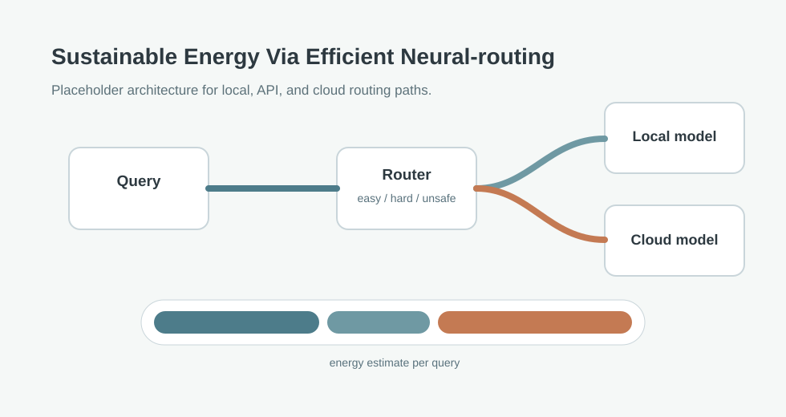

A draft project article for an energy-aware AI router that sends simple prompts to local models or APIs and reserves cloud inference for harder prompts. Replace placeholder claims with measured latency, quality, and energy results.

How much inference energy can be saved by routing prompts through the smallest capable compute path?
Classify prompts as easy, hard, or unsafe, route them to local, API, or cloud paths, and report per-query latency and estimated watt-hours.
Placeholder architecture. Replace with benchmark bars, routing accuracy, energy estimates, and failure cases.